Extra's about Mamamoo
Mamamoo has a few extra information that a lot of fans already know, but newcomers probably not. Here are some of the extra information, that is fun to know about some of the members.
Wheein & Hwasa
Wheein and Hwasa have been friends sinds middle school. Wheein and Hwasa both had the same dream of becoming a kpop artist. Because of them sharing the same dream, they both went to Seoul to achieve there dreams and made it happen togther.
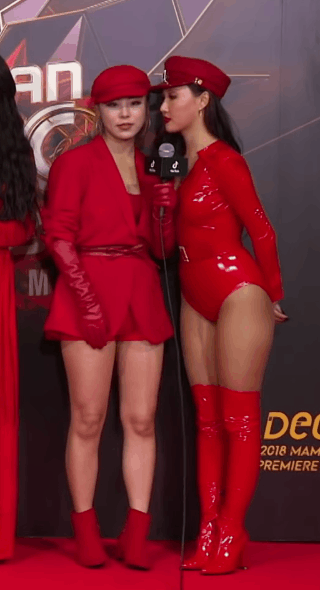 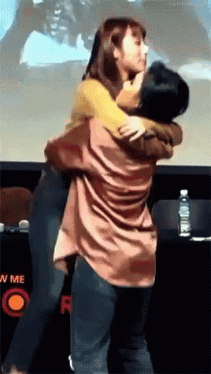 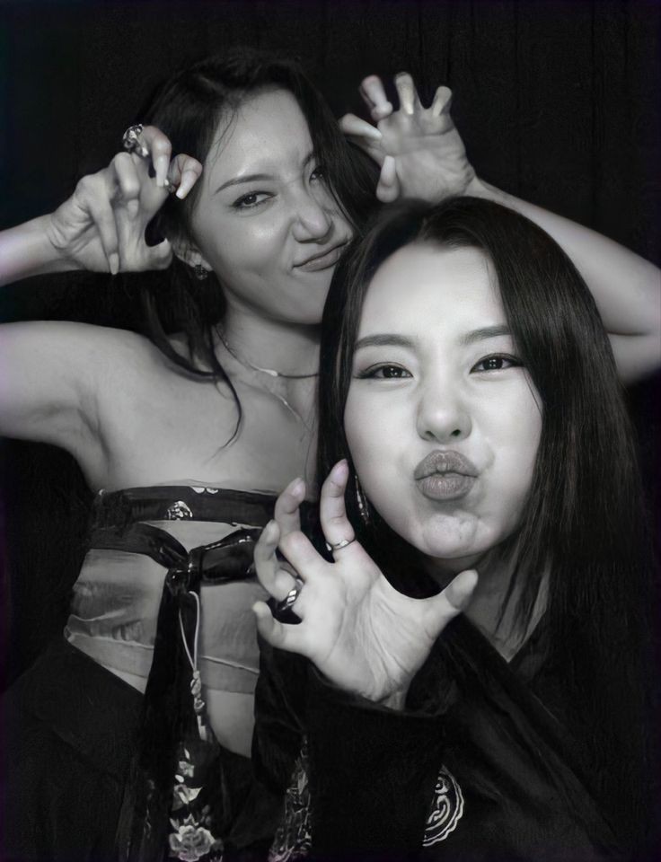
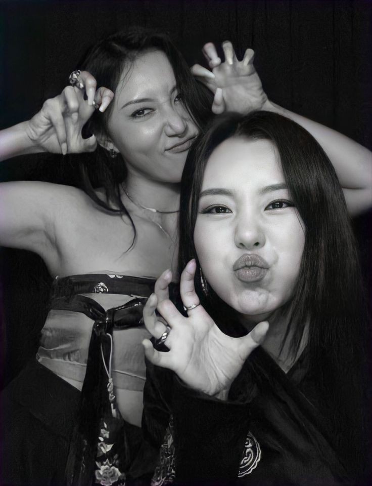
Hwasa with kpop legends
Hwasa was in a show called Dancing queens on the road where she and the other ladies tour around korea to preform for their fans. They are all from diffrent years so the age range form their audience was very big. The big stars that where on the show where Kim sun, Uhm Jung Hwa, Lee Hyori, Boa and Hwasa herself. You will see that they will become a sisterhood and see their personalities pop out.
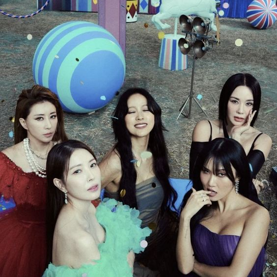 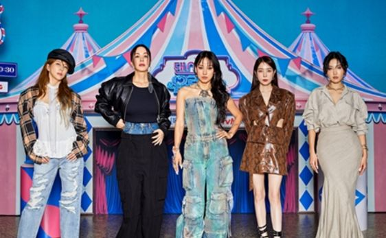King of Mask Singers
All of the members participated in the show King of Mask Singers. This is a show where famous and normal people go against each other to see who the better singer is. They do this while wearing a costume and all of the contestants get a name with the costume. The members of Mamamoo all participated on another date and their names when they were on the show were: The Sunflower (Solar), the Swan (Moonbyul) , the Half Moon (Wheein) and Aerobic girl (Hwasa).
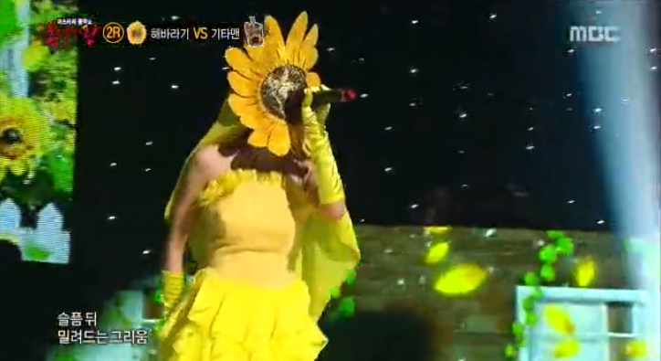 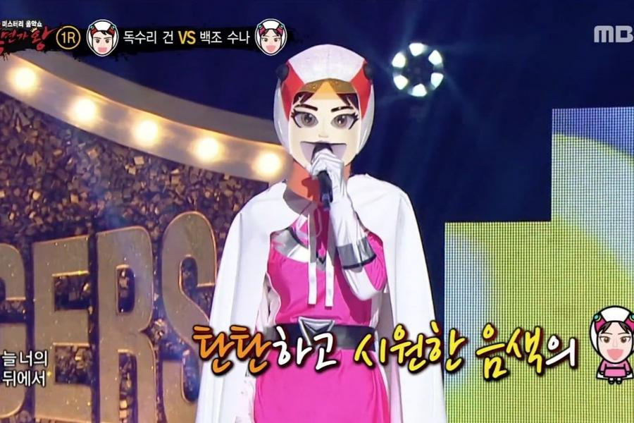 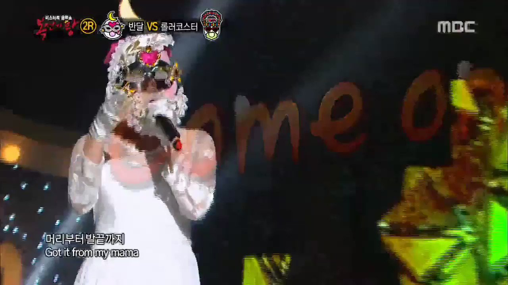 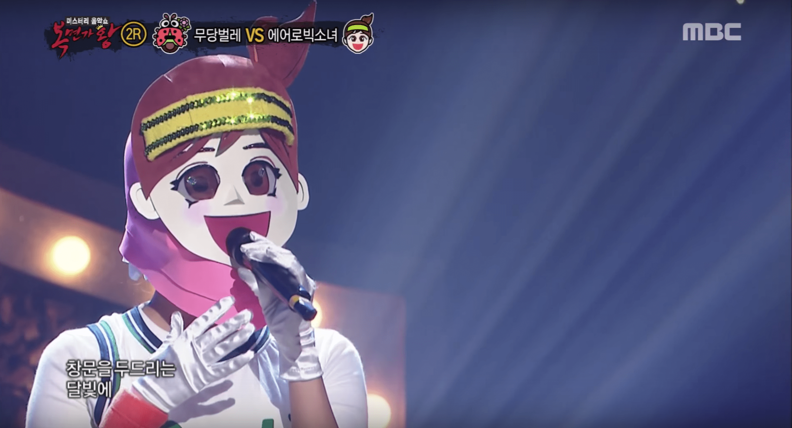Friends
Solar is very close friends with Chorong the leader of the girlgroup Apink.
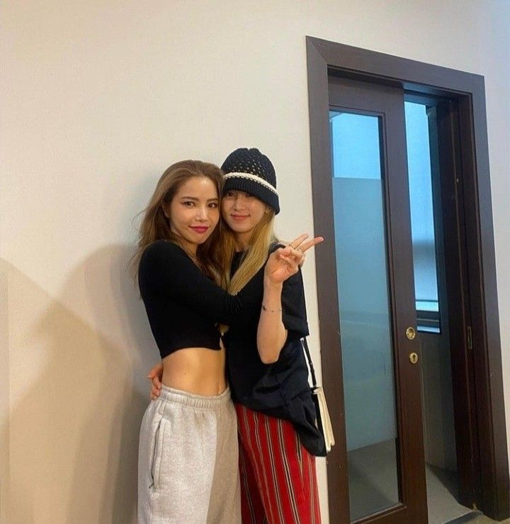Moonbyul is very close friends with Seulgi of the kpop group Red Velvet. She is also in a group chat that is called 92-liners, with other kpop stars that were born in 1992. The group consist of Hani (EXID), Jin (BTS), Ken (VIXX) and Sandeul (B1AU).
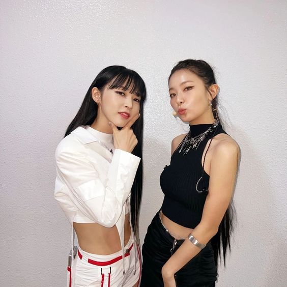 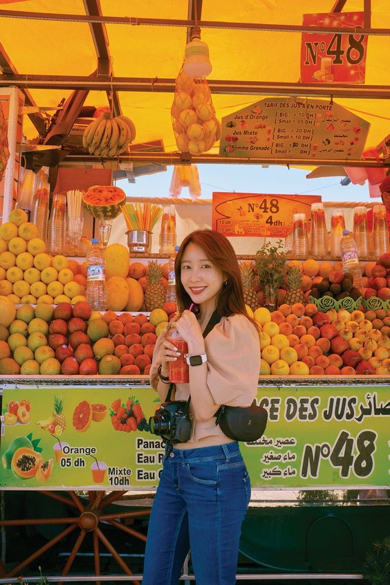Wheein is close with Newsun (sonamoo), Vernon (Seventeen), Jude (Bigstar) and Taeho (Imfact).
Secret Unnie
Wheein was on a variety show Secret Unnie in 2018, with Hyo from Girls Generation. After the show they've become close and are friends now. They just had a small reunion on September 4 2023 on de radio show Volume Up where Wheein was the special DJ for a couple of weeks.
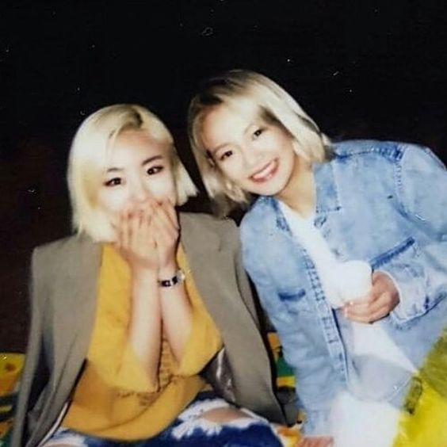 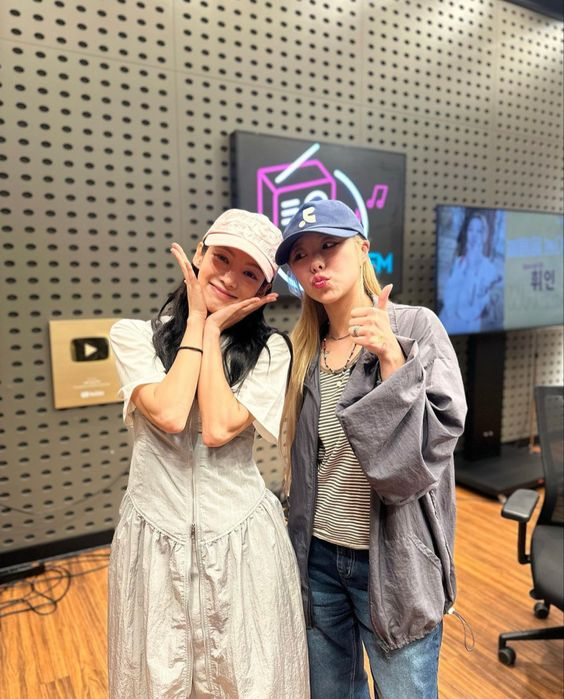Queendom
Mamamoo where on a show called Queendom. Queendom was aired every thursday at 21.20 on Mnet, there first episode aired on august 29th 2019 and it ended on october 31st 2019. It was a show to promote your group and the winner would get a tour aranggment. There were 6 other girl groups that participated on the show AOA, Oh my girl, (G)-idle, Lovleyz and soloist Park Bom. In the show the groups had to do a bunch of missions. The first mission was to performe a hit song, that had to be rearranged so it would be diffrent than there usual stage. Mamamoo performed there hit song Decalcomanie and where second with a score of 7,183. The 2nd mission was to cover on of the other groups or soloist song and give your own style to it. Mamamoo had to cover the group AOA song named Good Luck and became second with 7,667 points. The 3th mission the groups had to preper for 2 performance, the first round was a Unit round and the second performance was a Preliminary performance. where all the groups selected their main vocal and main performer and they would for 2 diffrent units with 3 diffrent acts each unit.
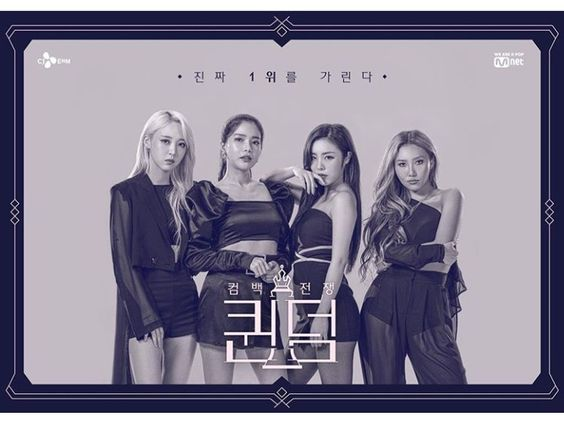Mamamoo always came in second place but didn't mind this. You could also see that they were there just to have fun and to promote the group better. at the finals they put on an amazing performance and at the finals they became the winners of the show. For there performance they made a new song called Destiny and this song was going to be
I live alone
I live alone is a show where they showcase, what korean celebrities do when they are on there off day. Hwasa was on the main pannel for a long time periode.
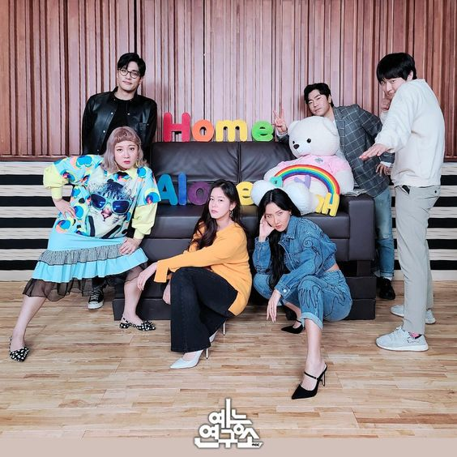 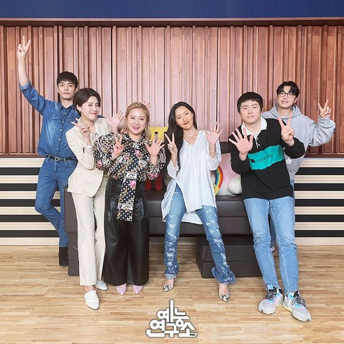 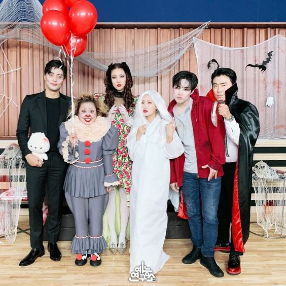